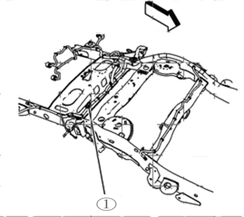

Part 4
GMLAN Terminator Resistor 2007 Vehicles1. Turn OFF the ignition and all accessories.
2. Raise and support the vehicle. Refer to Lifting and Jacking the Vehicle in SI.
Typical Location of Terminator Resistor (1) Short Wheel Base Vehicle
Typical Location of Terminator Resistor (1) Long Wheel Base Vehicle - RPO NQZ
Typical Location of Terminator Resistor (1) Long Wheel Base Vehicle - Except RPO NQZ
Note
RPO NQZ Without Auxiliary Fuel Tank.
3. On the vehicle being serviced, observe the location of the terminator resistor. Inspect the wiring harness leading to the terminator resistor, for chafed, damaged, pinched, open or shorted wiring.
• If the wiring is damaged, repair as needed. Refer to Power and Signal Distribution > Wiring Systems and Power Management > Diagnostic Information and Procedures. Protect the conduit by covering any sharp edge with butyl tape and the harness with woven polyester (PET) electrical tape. Secure the harness as needed.
• If the wiring is not damaged, proceed to Step 4.
4. Disconnect the electrical connector from the terminator resistor.
5. Test the terminator resistor for 110-130ohm.
• If the resistance is not within the specified range, replace the terminator resistor and proceed to Step 6.
• If the resistance is within the specified range, connect the electrical connector to the terminator resistor. Refer to Power and Signal Distribution > Data Communications > Scan Tool Does Not Communicate with High Speed GMLAN Device OR Diagnostic Trouble Code (DTC) List - Vehicle in SI.
6. Connect the electrical connector to the terminator resistor. Secure the terminator resistor as needed.
7. Lower the vehicle.
8. Clear any DTCs that may be present with a scan tool and verify the proper operation of the vehicle.
Data Link Resistor 1 2009 Vehicles
1. Turn OFF the ignition and all accessories.
2. Raise and support the vehicle. Refer to Lifting and Jacking the Vehicle in SI.
Typical Location of Data Link Resistor 1 (1) Short and Long Wheel Base Vehicles

Typical Location of Data Link Resistor 1 (1) Long Wheel Base HD Vehicles
3. On the vehicle being serviced, observe the location of the data link resistor 1 (1). Inspect the wiring harness leading to the data link resistor 1, for chafed, damaged, pinched, open or shorted wiring.
• If the wiring is damaged, repair as needed. Refer to Power and Signal Distribution > Wiring Systems and Power Management > Diagnostic Information and Procedures. Protect the conduit by covering any sharp edge with butyl tape and the harness with woven polyester (PET) electrical tape. Secure the harness as needed.
• If damage is not found, proceed to Step 4.
4. Disconnect the electrical connector from the data link resistor 1.
5. Test the Data Link Resistor 1 for 110-130ohm.
• If the resistance is not within the specified range, replace the data link resistor 1 and proceed to Step 6.
• If the resistance is within the specified range, connect the electrical connector to the data link resistor 1. Refer to Power and Signal Distribution > Data Communications > Scan Tool Does Not Communicate with High Speed GMLAN Device OR Diagnostic Trouble Code (DTC) List - Vehicle in SI.
6. Connect the electrical connector to the data link resistor 1. Secure the data link resistor 1 as needed.
7. Lower the vehicle.
8. Clear any DTCs that may be present with a scan tool and verify the proper operation of the vehicle.
Rear Chassis Mounted Data Link Resistor 1 Chafed Wiring Harness Causing Intermittent No/Crank and/or Scan Tool Does Not Communicate with High Speed GMLAN Device
1. Turn OFF the ignition and all accessories.
2. Raise and support the vehicle. Refer to Lifting and Jacking the Vehicle in SI.
3. Typical location of a data link resistor 1 (1) mounted on the rear of the chassis.

4. Inspect the wiring harness leading to the rear data link resistor 1, between the truck box and frame for chafed, damaged, pinched, open or shorted wiring as shown.
• If the wiring is damaged, repair as needed. Refer to Power and Signal Distribution > Wiring Systems and Power Management > Diagnostic Information and Procedures. Protect the conduit by covering any sharp edge with butyl tape and the harness with woven polyester (PET) electrical tape. Secure the harness as needed. Proceed to Step 9.
• If the wiring is not damaged, proceed to Step 5.
5. Disconnect the electrical connector from the data link resistor 1.
6. Test the data link resistor 1 for 110-130ohm.
• If the resistance is not within the specified range, replace the data link resistor 1 and proceed to Step 7.
• If the resistance is within the specified range, connect the electrical connector to the data link resistor 1. Refer to Power and Signal Distribution > Data Communications > Scan Tool Does Not Communicate with High Speed GMLAN Device OR Diagnostic Trouble Code (DTC) List - Vehicle in SI.
7. Connect the electrical connector to the data link resistor 1. Secure the resistor as needed.
8. Protect the conduit by covering any sharp edge with butyl tape and the harness with woven polyester (PET) electrical tape. Secure the harness as needed.
9. Lower the vehicle.
10. Clear any DTCs that may be present with a scan tool and verify the proper operation of the vehicle.
Inspection of Engine Harness Connector X109 for Backed Out or Bent Terminals and Poor Connections
1. Turn OFF the ignition and all accessories.
2. Locate the X109 connector. Refer to Wiring Systems and Power Management > Component Locator > Master Electrical Component List > X109 in SI.
3. Before disconnecting, verify the connector is fully seated together even though the lever is locked down as shown.
If the connector is not fully seated, repair as needed. Refer to Power and Signal Distribution > Wiring Systems and Power Management > Diagnostic Information and Procedures > Connector Repairs in SI.
4. Inspect the connector for the following conditions:
- Backed out terminals
- Bent pins
- Corrosion
- Poor terminal tension (use the correct test probe)
• If a condition is found, repair as needed. Refer to Power and Signal Distribution > Wiring Systems and Power Management > Diagnostic Information and Procedures in SI.
AND
• If corrosion is found, proceed to the section of the bulletin titled: Repairing Fretting Corrosion to complete the repair.
5. Clear any DTCs that may be present with a scan tool and verify the proper operation of the vehicle.
Inspection of Engine Harness Connector X115 for Backed Out or Bent Terminals and Poor Connections
1. Turn OFF the ignition and all accessories.
2. Locate the X115 connector. Refer to Wiring Systems and Power Management > Component Locator > Master Electrical Component List > X115 in SI.
3. Inspect the connector for the following conditions:
- Backed out terminals
- Bent pins
- Corrosion
- Poor terminal fit (use the correct test probe)
• If a condition is found, repair as needed. Refer to Wiring Systems and Power Management > Diagnostic Information and Procedures in SI.
AND
• If corrosion is found, proceed to the section of the bulletin titled: Repairing Fretting Corrosion to complete the repair.
4. Clear any DTCs that may be present with a scan tool and verify the proper operation of the vehicle.
Hybrid Models (HP2) Chafed Wiring Harness Locations and Inspection of Engine Harness Connector X150 for Backed Out Terminals and/or Poor Connections at Ground Locations G102 and G300
1. Turn OFF the ignition and all accessories.
2. Locate the X150 connector. Refer to Wiring Systems and Power Management > Component Locator > Master Electrical Component List > X150 in SI.
3. Inspect the connector for the following conditions:
- Backed out terminals
- Bent pins
- Corrosion
- Poor terminal fit (use the correct test probe)
• If a condition is found, repair as needed. Refer to Power and Signal Distribution > Wiring Systems and Power Management > Diagnostic Information and Procedures in SI.
AND
• If corrosion is found, proceed to the section of this bulletin titled: Repairing Fretting Corrosion to complete the repair.
• If a condition or corrosion is not found, proceed to Step 4.
4. Inspect for a misrouted harness having chafed, damaged, pinched, open or shorted wiring from rubbing on the cooling fins of the Transmission Auxiliary Fluid Pump Control Module as shown.
• If the wiring is damaged, repair as needed. Refer to Power and Signal Distribution > Wiring Systems and Power Management > Diagnostic Information and Procedures in SI. Protect the conduit by covering any sharp edge with butyl tape and the harness with woven polyester (PET) electrical tape. Secure the harness as needed. Proceed to Step 8.
• If the wiring is not damaged, proceed to Step 5.
5. Inspect for chafed, damaged, pinched or shorted wiring caused by a mispositioned harness retaining clip as shown. This condition usually occurs when the tab of the clip is aligned with a slot in the conduit.
• If the wiring is damaged, repair as needed. Refer to Power and Signal Distribution > Wiring Systems and Power Management > Diagnostic Information and Procedures in SI. Protect the conduit by covering any sharp edge with butyl tape and the harness with woven polyester (PET) electrical tape. Secure the harness as needed. Proceed to Step 8.
• If the wiring is not damaged, proceed to Step 6.
6. Locate ground connections G102 and G300. Refer to Wiring Systems and Power Management > Component Locator > Master Electrical Component List > G102 and G300 in SI.
7. Inspect G102 and G300 for a clean and tight connection. Undercoating or corrosion may be present between the eyelet and the frame resulting in a poor connection.
• If a poor connection or undercoating is found, clean the area and repair as needed. Refer to Power and Signal Distribution > Wiring Systems and Power Management > Diagnostic Information and Procedures in SI.
Proceed to Step 8.
• If corrosion is found, clean the area and repair as needed. Refer to Power and Signal Distribution > Wiring Systems and Power Management > Diagnostic Information and Procedures in SI. Proceed to the section of this bulletin titled: Repairing Fretting Corrosion to complete the repair.
8. Clear any DTCs that may be present with a scan tool and verify the proper operation of the vehicle.
Hybrid Models (RPO HP2) Data Link Resistor 2
1. Turn OFF the ignition and all accessories.
2. Inspect the harness leading to the data link resistor 2 (1) for chafed, damaged, pinched, open or shorted wiring. Refer to Power and Signal Distribution > Data Communications > Schematic and Routing Diagrams > Data Communication Schematics.
• If the wiring is damaged, repair as needed. Refer to Power and Signal Distribution > Wiring Systems and Power Management > Diagnostic Information and Procedures. Protect the conduit by covering any sharp edge with butyl tape and the harness with woven polyester (PET) electrical tape. Secure the harness as needed.
• If the wiring is not damaged, proceed to Step 3.
3. Disconnect the electrical connector from the data link resistor 2.
4. Test the data link resistor 2 for 110-130ohm.
• If the resistance is not within the specified range, replace the data link resistor 2 and proceed to Step 5.
• If the resistance is within the specified range, connect the electrical connector to the terminator resistor. Refer to Power and Signal Distribution > Data Communications > Scan Tool Does Not Communicate with High Speed GMLAN Device OR Diagnostic Trouble Code (DTC) List - Vehicle in SI.
5. Connect the electrical connector to the data link resistor 2. Secure the resistor as needed.
6. Clear any DTCs that may be present with a scan tool and verify the proper operation of the vehicle.
Hybrid Models (HP2) Equipped With OnStar(R) Delete RPO UE0 - IP Junction Block Jumper Harness Loop Connector Chafed Wiring
Various Symptoms and/or Powertrain and Communication DTCs Set
The following is a list of some of the DTCs that may be set and is not all inclusive: C0242, P0700, P0AC4, U0293, U0100, U0109, U0129, U0140, U1862, U186B, U1886 or U1888.
1. Turn OFF the ignition and all accessories.
2. Disconnect the negative battery cable. Refer to Battery Negative Cable Disconnection and Connection in SI.
3. Locate the junction block (1) on the driver side of the vehicle under the instrument panel (IP).
4. Locate the jumper harness loop connector that plugs into the bottom back of the junction block.
5. Inspect the jumper harness loop connector (1) for chafed (2), damaged, pinched, open or shorted wiring from contact with the IP brace.
• If the wiring is damaged, repair as needed. Refer to Power and Signal Distribution > Wiring Systems and Power Management > Diagnostic Information and Procedures in SI. Protect the harness by covering any sharp edge with butyl tape and the harness with woven polyester (PET) electrical tape. Secure the jumper harness loop connector as needed. Proceed to Step 6.
• If the wiring is not repairable, replace the P/N 15127940 jumper harness loop connector. Protect the connector by covering any sharp edge with butyl tape and the jumper harness loop connector wiring with woven polyester (PET) electrical tape. Secure the harness as needed. Proceed to Step 6.
6. Secure the junction block as needed.
7. Connect the negative battery cable. Refer to Battery Negative Cable Disconnection and Connection in SI.
8. Clear any DTCs that may be present with a scan tool and verify the proper operation of the vehicle.
Lost Communication with Various Control Modules and DTCs Set
DTC Descriptors
Note
Depending on the vehicle and vehicle build there may be other DTCs set by other modules.
- DTC U0073 Control Module Communication Bus A Off
- DTC U0100 Lost Communication with Engine/Powertrain Control Module (ECM/PCM)
- DTC U0101 Lost Communication with Transmission Control Module (TCM)
- DTC U0102 Lost Communication with Transfer Case Control Module
- DTC U0121 Lost Communication with Electronic Brake Control Module (EBCM)
- DTC U0140 Lost Communication with Body Control Module (BCM)
1. Connect a scan tool and perform the Diagnostic System Check - Vehicle. Retrieve and record any DTCs, Current or in History from all of the control modules.
If any DTC(s) are set, refer to Diagnostic Trouble Code (DTC) List - Vehicle to identify the connector(s) of the control module/component which may be causing the condition.
2. Turn OFF the ignition and all accessories.
3. Disconnect the connector(s) at the affected module.
4. Inspect the connector(s) for the following conditions:
- Backed out terminals
- Bent pins
- Corrosion
- Poor terminal tension. Use the correct test probe.
- Water intrusion
• If a condition is found, repair as needed. Refer to Power and Signal Distribution > Wiring Systems and Power Management > Diagnostic Information and Procedures in SI.
Proceed to Step 5.
• If corrosion or water intrusion is found, proceed to the section of this bulletin titled: Repairing Fretting Corrosion to complete the repair.
5. Reconnect the connector at the affected module.
6. Clear any DTCs that may be present with a scan tool and verify the proper operation of the vehicle.
Inspection of Electronic Suspension Control (ESC) Module Connector for Missing Weather Plugs in Not Used Cavities (RPO Z55 or G69)
1. Turn OFF the ignition and all accessories.
Typical Location of ESC Module
2. Locate the ESC module (1).
3. Disconnect the connector (2) at the ESC module (1).
Typical View of Missing Weather Plug
4. Inspect the connector of the ESC module for weather plugs that are missing from: Not Used cavities (1). Refer to > Power and Signal Distribution > Wiring Systems and Power Management > Component Locator > Master Electrical Component List > Electronic Suspension Control (ESC) Module > Connector End View for a list of cavities that are: Not Used .
• If a weather plug is missing from any Not Used cavity, repair as needed.
5. Install the connector (2) to the ESC module (1).
6. Clear any DTCs that may be present with a scan tool and verify the proper operation of the vehicle.
Repairing Fretting Corrosion
Note
Fretting corrosion looks like little dark smudges on the electrical terminals and appear where the actual electrical contact is being made. In less severe cases it may be unable to be seen or identified without the use of a magnifying glass.
1. If water intrusion is observed in the connector, use pressure regulated compressed air to dry it out.
2. DO NOT apply an excessive amount of dielectric lubricant as shown, to the connectors as hydrolock may result when attempting to mate the connectors.
Important
Use ONLY a clean nylon brush that is DEDICATED to the repair of this specific condition.
Using a one-inch or smaller nylon bristle brush, apply dielectric lubricant P/N 12377900 (in Canada P/N 10953529) to both the module or component side and the harness side of the affected connectors.
3. Reconnect the affected connector(s) and wipe away any excess lubricant that may be present.
4. If needed, connect the negative battery cable. Refer to Battery Negative Cable Disconnection and Connection in SI.
5. Clear any DTCs that may be present with a scan tool and verify the proper operation of the vehicle.
OnStar is a registered trademark of the OnStar Corporation.